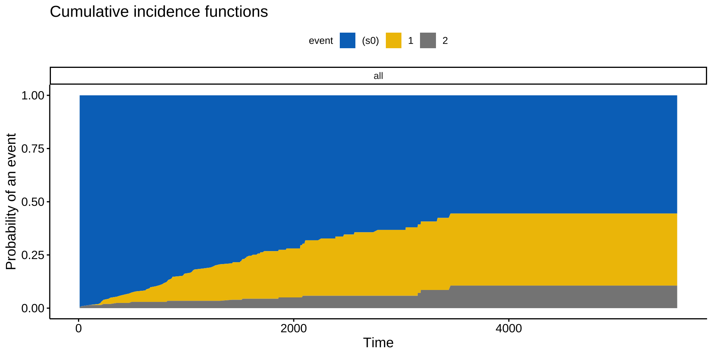
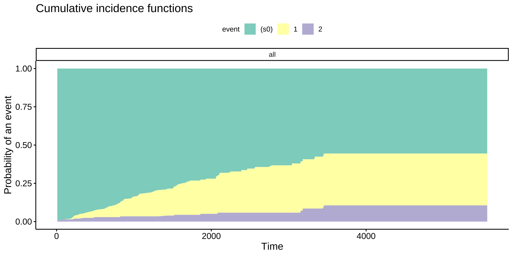
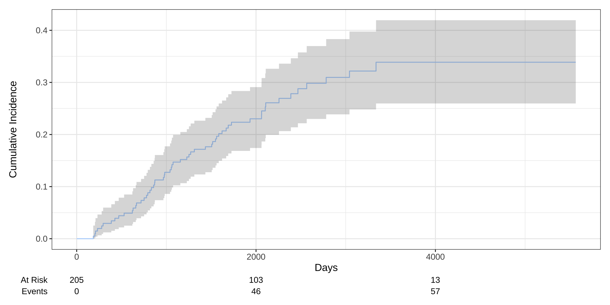
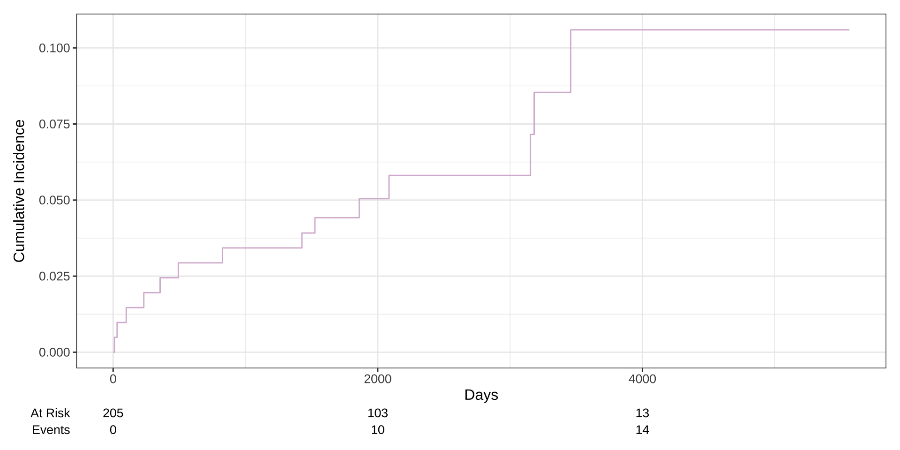
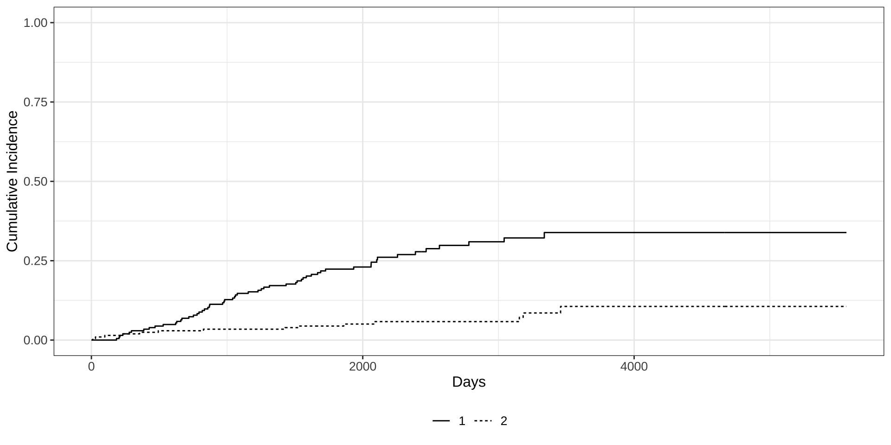
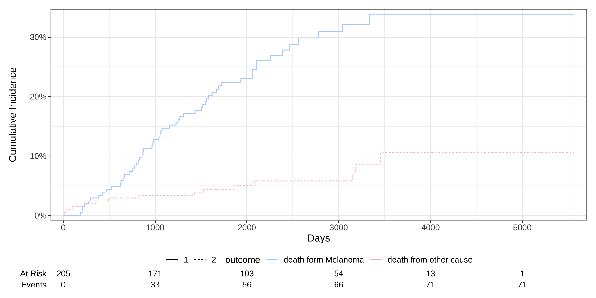
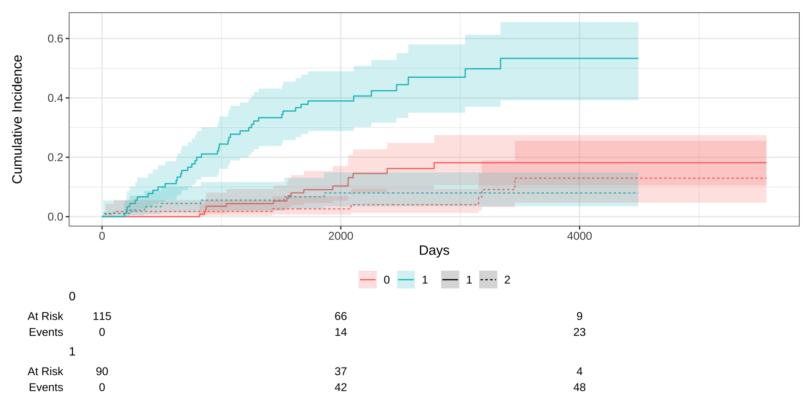
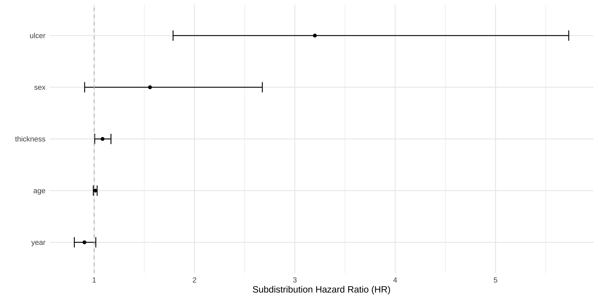

[1] "package:cmprsk" "package:tidycmprsk"2025-07-19
6.1 竞争风险模型简介
6.2 tidycmprsk 和 cmprsk
6.3 应用举例：竞争风险模型
竞争风险模型（Competing Risks Model）在存在多种互斥结局时，用于分析和比较特定结局发生概率及影响因素的统计方法。
竞争风险Competing Risks()：是指在随访或观察期间，研究对象有可能因为多种不同且互斥的原因发生终点事件，一旦发生其中一种事件，就无法再经历其他事件。
各种终点事件“竞争”着谁先发生
这些事件互相排斥，每个对象只能经历其中之一。
传统的生存分析（如Kaplan-Meier、Cox回归）往往只关注单一结局，忽略了其他风险事件的影响，可能导致结果偏倚。
竞争风险模型假设每个研究对象在随访期间仅会经历一种事件（如死亡、复发、失访等），事件之间相互排斥。
模型设定需明确每类事件的定义，并正确标注事件类型（如status=0为无事件，1为事件A，2为事件B等）。
竞争风险分析通过累积发生概率或亚分布风险来估计目标事件的概率。
累积发生率函数(Cumulative Incidence Function, CIF): 在某时间点前，目标事件发生的累积概率。
亚分布风险(Subdistribution Hazard)：在所有样本中，某一特定事件（如目标事件）在某时刻尚未发生的情况下，单位时间内首次发生该事件的速率，即便有些样本已经因为其他事件（竞争事件）而“失去观察”也要“留在分母里”。
传统风险率（如Cox模型）只考虑还没发生任何事件的个体。
亚分布风险则把已经发生了竞争事件的人继续留在统计基数中（虽然这些人实际上不会再发生目标事件），以便更准确地反映实际发生概率。
Fine-Gray模型：一种常用的竞争风险回归模型，基于亚分布风险，估计协变量对目标事件累积发生概率的影响。
Gray 检验：比较在存在竞争风险时，不同组的CIF是否存在显著差异。
累积发生概率（CIF） 对于目标事件 \(k\) \(，CIF 定义为：\)\(CIF_k(t) = P(T \leq t, \text{事件类型} = k)\)其中 \(T\) 是事件发生时间，CIF 考虑了所有竞争事件的发生概率。
Fine-Gray 模型基于亚分布风险函数(Subdistribution Hazard)，假设协变量对目标事件的亚分布风险有比例效应： \[h_k(t|X) = h_{k0}(t) \exp(\beta_1 X_1 + \beta_2 X_2 + \dots + \beta_p X_p)\]
\(h_k(t|X)\)：目标事件\(k\)的亚分布风险。
\(h_{k0}(t)\)：目标事件\(k\)的基线亚分布风险。
\(\beta_i\)：协变量\(X_i\)的回归系数，解释变量对 CIF 的影响。
真实反映多结局过程：同时考虑各类风险事件，避免高估单一结局的发生率。
避免传统生存分析偏倚：Kaplan-Meier等方法在存在竞争风险时会高估目标事件概率，竞争风险模型能准确估计。
可比较不同组别累计发生率：通过CIF曲线和Gray检验比较不同亚组的特定事件概率。
可回归分析协变量影响：Fine-Gray模型可分析协变量对特定结局的影响，更适用于临床风险分层。
医学随访研究：如肿瘤患者因肿瘤死亡与非肿瘤死亡是竞争风险。
器官移植：移植失败和患者死亡互为竞争风险。
流行病学队列：多种排他性结局（如多种疾病的首次发作）分析。
失访/退出研究：失访与终点事件互为竞争风险时。
事件数而非总样本数更关键
每类（目标）竞争事件的发生例数越多越好，建议每个自变量对应的目标事件数≥10。
每类（目标）竞争事件的发生例数越多越好，建议每个自变量对应的目标事件数≥10。
目标事件的发生概率明显高于竞争事件的发生概率。
某些竞争事件发生率极低时，模型参数可能估计不稳定，建议合并类别或减少变量数量。
tidycmprsk 和 cmprsk推荐使用：tidycmprsk::cuminc(…)
明确声明调用tidycmprsk中的cuminc(), 避免使用其它函数如ggcuminc()时报错。
tidycmprsk::cuminc()
cmprsk::cuminc()
{MASS} 包中的 Melanoma 黑色素瘤数据
time：生存时间（天），可能为删失数据。
status：1 表示因黑色素瘤死亡，2 表示存活，3 表示因其他原因死亡
sex：1 = 男性，0 = 女性
age：年龄（岁）
year：手术年份
thickness：肿瘤厚度（毫米）
ulcer：1 = 有溃疡，0 = 无溃疡
编码：0=删失，1=目标事件，2=竞争事件
time status sex age year thickness ulcer
1 10 2 1 76 1972 6.76 1
2 30 2 1 56 1968 0.65 0
3 35 0 1 41 1977 1.34 0
4 99 2 0 71 1968 2.90 0
5 185 1 1 52 1965 12.08 1
6 204 1 1 28 1971 4.84 1 time status sex age year thickness ulcer
0 0 0 0 0 0 0
0 1 2
134 57 14 计算观测到到目标事件/竞争事件的累积发生率
time n.risk estimate std.error 95% CI
1,000 171 0.127 0.023 0.086, 0.177
2,000 103 0.230 0.030 0.174, 0.291
3,000 54 0.310 0.037 0.239, 0.383
4,000 13 0.339 0.041 0.260, 0.419
5,000 1 0.339 0.041 0.260, 0.419 time n.risk estimate std.error 95% CI
1,000 171 0.034 0.013 0.015, 0.066
2,000 103 0.050 0.016 0.026, 0.087
3,000 54 0.058 0.017 0.030, 0.099
4,000 13 0.106 0.032 0.053, 0.179
5,000 1 0.106 0.032 0.053, 0.179 time：时间点（天）。
n.risk：未发生事件的人数。
estimate：CIF 值，随时间上升。
std.error：估计标准误。
95%CI：置信区间。
解读：1000 天时，type 1 CIF = 12.7%；5000 天时，type 1 CIF = 33.9% (95% CI: 26.0%-41.9%)，type 2 CIF = 10.6% (95% CI: 5.3%-17.9%)。
按照是否有溃疡(ulcer)分为两组，计算这两个组别的CIF
# 按ulcer分组，计算并展示5年（1826.25天）时点的CIF表，并进行组间比较
tidycmprsk::cuminc(Surv(time, status) ~ ulcer, data = Melanoma) %>%
tidycmprsk::tbl_cuminc(
times = 1826.25,
label_header = "**{time/365.25}-year cuminc**") %>%
add_p()| Characteristic | 5-year cuminc | p-value1 |
|---|---|---|
| ulcer | <0.001 | |
| 0 | 9.1% (4.6%, 15%) | |
| 1 | 39% (29%, 49%) | |
| 1 Gray’s Test | ||
比较各种结局的累积发生率随时间的变化

蓝色：未发生事件; 黄色：事件 1; 灰色：事件 2。
每个时间点，黄色和灰色部分的高度叠加，代表“某事件已发生”的总比例。
随着时间推移，蓝色面积减少，说明越来越多个体发生了某种类型的事件。
不同事件在随访期间的累积发生概率如何随时间上升，同时显示有多少比例的事件仍未发生任何事件。
科研期刊 palette
jco: Journal of Clinical Oncology
jama: Journal of the American Medical Association
lancet: The Lancet
nejm: The New England Journal of Medicine
修改图形配色风格




tidycmprsk::cuminc(Surv(time, status) ~ 1, data = Melanoma) %>%
ggcuminc(outcome = c("1", "2")) +
aes(color = outcome) + # 强制美学映射
scale_color_manual(values = c("1" = "#B3D4FC",
"2" = "#F4C2C2"),
labels = c("death form Melanoma",
"death from other cause")) +
ylim(0, 1) +
labs(x = "Days") +
add_risktable() +
scale_ggsurvfit()
按ulcer分组，绘制多结局CIF曲线

Gray检验：比较不同组之间目标事件累积发生概率(cumulative incidence)的统计检验方法。
log-rank test：用于比较两组或多组在随访时间内的“生存曲线”是否有显著差异
Gray检验
| Characteristic | 1-year cuminc | 5-year cuminc | 10-year cuminc | p-value1 |
|---|---|---|---|---|
| ulcer | <0.001 | |||
| 0 | 0.00% (—%, —%) | 9.1% (4.6%, 15%) | 18% (11%, 27%) | |
| 1 | 6.7% (2.7%, 13%) | 39% (29%, 49%) | 53% (39%, 66%) | |
| 1 Gray’s Test | ||||
Variable Coef SE HR 95% CI p-value
sex 0.588 0.272 1.80 1.06, 3.07 0.030
age 0.013 0.009 1.01 0.99, 1.03 0.18 估计结果解释
sex: HR = 1.80, p-value = 0.03
与参考组相比（sex=0为女性，sex=1为男性），男性发生目标事件结局（因黑色素瘤死亡）的亚分风险比为1.80。
男性发生因黑色素瘤死亡的风险是女性的1.8倍。p值小于0.05，说明性别的影响具有统计学意义。
Variable Coef SE HR 95% CI p-value
sex 0.588 0.272 1.80 1.06, 3.07 0.030
age 0.013 0.009 1.01 0.99, 1.03 0.18 age: HR = 1.01, p-value = 0.18
每增加1岁，因黑色素瘤死亡的亚分风险比增加1%（1.01倍），但p值为0.18，不具有统计学显著性（即年龄对type1结局风险的影响不显著）。
可能是竞争事件掩盖年龄效应。
Fine-Gray 竞争风险回归模型（subdistribution hazard model）
Fine-Gray 竞争风险回归模型型的估计结果： \[h_1(t | X) = h_{10}(t) \exp\left(0.588 \cdot \text{sex} + 0.013 \cdot \text{age}\right)\]
也可以表达成：
\(log(\text{HR}) = log\left(\frac{h_{1}(t)}{h_{10}(t)}\right)= 0.588 \cdot \text{sex} + 0.013 \cdot \text{age}\)
sex：sex = 0 为女性(参考组)，sex = 0 表示男性。
age：连续变量，表示年龄（单位：年）。
\(h_{01}(t)\)：基线子分布危险率，依赖于时间 \(t\)和数据，但 crr()没有直接估计\(h_{10}(t)\)，需要通过非参数方法估计。
fit1 <- tidycmprsk::crr(Surv(time, status) ~ sex + age, data = Melanoma)
fit2 <- tidycmprsk::crr(Surv(time, status) ~ sex + age + year + thickness, data = Melanoma)
fit3 <- tidycmprsk::crr(Surv(time, status) ~ sex + age + year + thickness + ulcer, data = Melanoma)
library(gtsummary)
tbl1 <- tbl_regression(fit1, exponentiate = TRUE)
tbl2 <- tbl_regression(fit2, exponentiate = TRUE)
tbl3 <- tbl_regression(fit3, exponentiate = TRUE)
# 合并报告
merged_tbl <- tbl_merge(
tbls = list(tbl1, tbl2, tbl3),
tab_spanner = c("**Model 1**", "**Model 2**", "**Model 3**")
)
merged_tbl| Characteristic |
Model 1
|
Model 2
|
Model 3
|
||||||
|---|---|---|---|---|---|---|---|---|---|
| HR | 95% CI | p-value | HR | 95% CI | p-value | HR | 95% CI | p-value | |
| sex | 1.80 | 1.06, 3.07 | 0.030 | 1.66 | 0.97, 2.82 | 0.063 | 1.56 | 0.91, 2.68 | 0.11 |
| age | 1.01 | 0.99, 1.03 | 0.2 | 1.01 | 0.99, 1.03 | 0.3 | 1.01 | 0.99, 1.03 | 0.3 |
| year | 0.92 | 0.82, 1.03 | 0.2 | 0.90 | 0.80, 1.02 | 0.091 | |||
| thickness | 1.14 | 1.07, 1.21 | <0.001 | 1.08 | 1.01, 1.17 | 0.035 | |||
| ulcer | 3.20 | 1.79, 5.73 | <0.001 | ||||||
| Abbreviations: CI = Confidence Interval, HR = Hazard Ratio | |||||||||
# A tibble: 5 × 7
term estimate std.error statistic conf.low conf.high p.value
<fct> <dbl> <dbl> <dbl> <dbl> <dbl> <dbl>
1 ulcer 3.20 0.297 3.91 1.79 5.73 0.000092
2 sex 1.56 0.276 1.60 0.905 2.68 0.11
3 thickness 1.08 0.0381 2.10 1.01 1.17 0.035
4 age 1.01 0.00958 1.08 0.992 1.03 0.28
5 year 0.903 0.0604 -1.69 0.802 1.02 0.091 
# 竞争风险回归（Fine-Gray模型）
fit_fg <- tidycmprsk::crr(Surv(time, status) ~ sex + age, data = Melanoma)
tbl_fg <- tbl_regression(fit_fg, exp = TRUE, label = list(sex = "Sex", age = "Age")) %>%
modify_header(label = "**变量**") %>%
modify_caption("**Fine-Gray 竞争风险回归**")
# Cox回归
fit_cox <- coxph(Surv(time, ifelse(status == 1, 1, 0)) ~ sex + age, data = Melanoma)
tbl_cox <- tbl_regression(fit_cox, exp = TRUE, label = list(sex = "Sex", age = "Age")) %>%
modify_header(label = "**变量**") %>%
modify_caption("**Cox 比例风险模型**")
tbl_merge(
tbls = list(tbl_fg, tbl_cox),
tab_spanner = c("**Fine-Gray 竞争风险回归**", "**Cox 比例风险模型**")
)| 变量 |
Fine-Gray 竞争风险回归
|
Cox 比例风险模型
|
||||
|---|---|---|---|---|---|---|
| HR | 95% CI | p-value | HR | 95% CI | p-value | |
| Sex | 1.80 | 1.06, 3.07 | 0.030 | 1.82 | 1.08, 3.07 | 0.025 |
| Age | 1.01 | 0.99, 1.03 | 0.2 | 1.02 | 1.00, 1.03 | 0.056 |
| Abbreviations: CI = Confidence Interval, HR = Hazard Ratio | ||||||
性别（男性）是影响目标事件（如因黑色素瘤死亡）风险的独立因素，无论是否考虑竞争风险；
而年龄虽然在Cox模型下接近显著，但在Fine-Gray模型下未见统计学意义，提示在存在竞争风险时年龄的影响被削弱。
Fine-Gray回归(SHR):评估变量对实际累计发生概率（CIF）的影响，适合临床决策。
Cox回归(HR):评估变量对即时发病风险的影响，适合机制探索。
建议: 两者结合分析，结果更全面。
Fine-Gray模型适合预后研究
Cox (HR)适合机制研究
竞争风险模型：解决目标事件受竞争事件干扰的生存分析。
CIF曲线, Gray 检验, Fine-Gray模型
tidycmprsk::cuminc(), tidycmprsk::crr()
survminer::ggcompetingrisks(), ggsurvfit::ggcuminc()
Fine-Gray (SHR) 适合预后, Cox (HR)适合机制研究
https://lizongzhang.github.io/survival
© 2025 2025 医咖会 Li Zongzhang